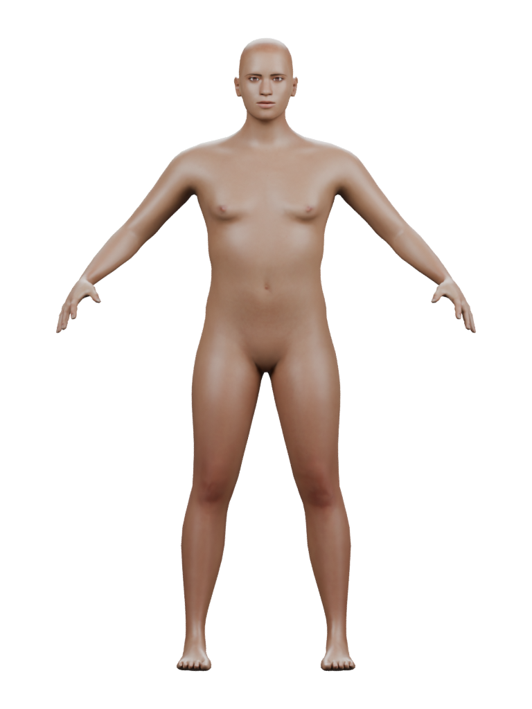

Ari · restrained smile
One fixed, low-intensity pair adds a subtle mouth-corner lift. Root review retains that response provisionally; independent review is pending. Eyes and lips remain readable in these first views. The dark lip seam remains visible, so this does not qualify the concept's closed-lip appearance or lip contact.
Same body shape, skin, lighting and camera. The source was restored to zero expression values after rendering. Select an image to inspect the complete original.
Whole figure
Baseline · material 0.5Restrained pair 0.2 · material 0.5